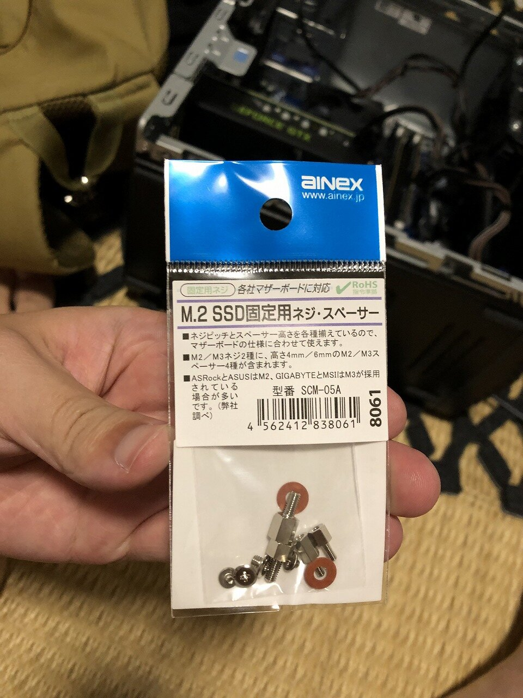
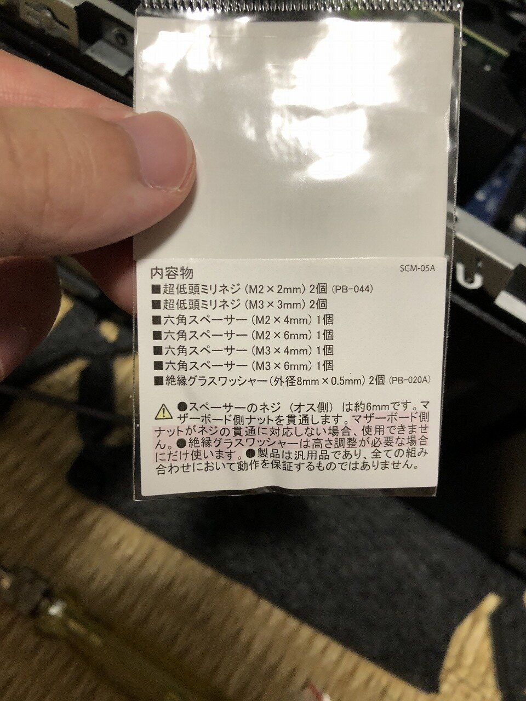
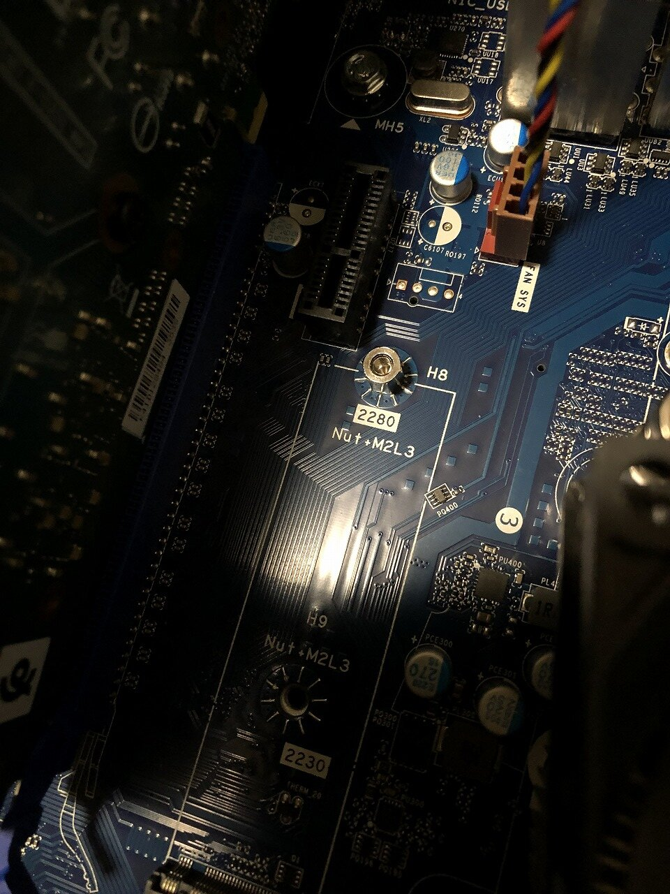
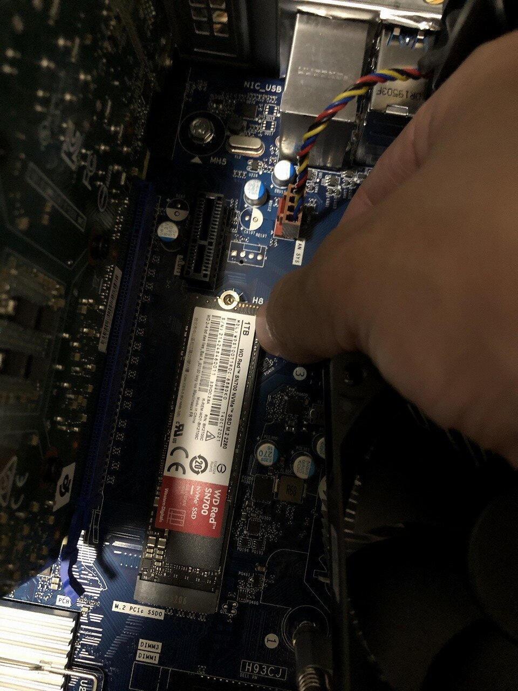
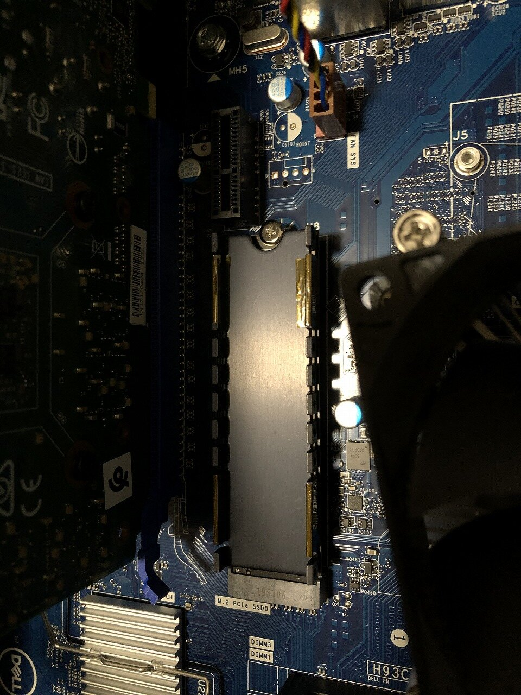
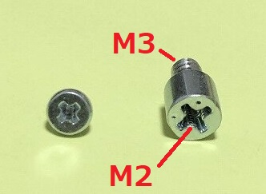
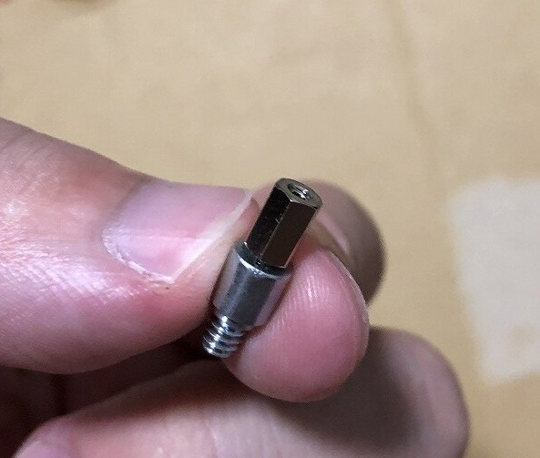
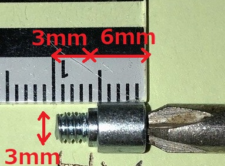

最終更新: 2022/09/18
Dell G5 5090というゲーミングPC(ストレージは2TBのHDDのみ)を2020年頃に購入して、1年ほどするとゲーム中にいきなりなんの操作も受け付けなくなったり、ブルースクリーンが多発したりし始めた。
アキバのパソコン屋に持っていったら「電源の容量が足りないかも」「DellのPCは独自の部品を使っているから市販品と交換するのは難しい」「原因分からん」とのことだったので、もう売ろうかとしていた。
そこで使えるパーツだけとって後は売ろうと思ってバラバラにしたが、いざパソコン工房に電話したらバラバラの状態じゃ買い取ってくれないらしい。(ちなみにハードオフではバラバラの状態でも買うと言われた)
バラバラにする過程で、CPUのグロスがカピカピになっていたり、M.2のSSDを入れるスロットがあったりして、このあたりをとりあえずグロス塗りなおしてM.2に換装してそれでもダメだったら売ろうと思うに至る。
部品の組みなおしとかOS入れなおしとか色々大変だった。そちらについては後日アップ予定。
今回はその中でも情報がなくて一番時間のかかった「M.2 SSD マザボ取り付け時ネジ無し問題」について記録する。
換装成功して、ブルスクもフリーズも無くなりました。全部HDDが悪かったみたい。
Dell G5 5090で、HDDモデルを選択して買っている場合、M.2のスロットはあっても、M.2 SSDをマザーボードに固定するためのネジがおそらく揃っていない。
自分の場合はもしかしたら無くしてしまっただけかもしれないが、マザーボードへの固定用のスタンドオフネジ(オスメスネジ)はあっても、そのネジにさすためのネジが無かった。
色々頑張って探して、AINEX SCM-05Aというネジのセットを買って試したら使えました。
AINEX SCM-05A 
↓この中の六角スペーサー(M3×6mm)と、超低頭ミリネジ(M3×3mm)というネジが使えます。
M3はネジの棒部分の直径が3mmということだそう(参考:モノタロウ)。
六角形部分とネジの部分が6mmです。

↓六角スペーサー(M3×6mm)をマザーボードに取り付けてみたところ。 
↓六角スペーサー(M3×6mm)の上にM.2 SSDが乗ります。 
↓M.2 SSDを載せ、超低頭ミリネジ(M3×3mm)で締めたところ。 M.2 SSDの上に発熱対策のためヒートシンクを付けたので、上の画像と少し異なっています。 
DELLから提供されていたスタンドオフネジ(オスメスネジ・スペーサー)は以下の右側のネジ。
マザーボードに取り付ける側がM3、間にSSDをはさんで上から締めるときのネジ穴がM2だった模様。
取付けネジをアマゾンで検索するとすぐ出てくるのがこれ(アイネックス M.2
SSD固定用ミリネジ PB-044)だが、ネジの長さが2mmで、M.2自体の厚みが1mmくらいあるので、挟みこんだ場合にちゃんと締められるか微妙。

ちなみに六角スペーサー(M2×6mm)を以下のように刺せたので、M2で6mmくらいの長さまでのネジなら何でもよさそう。

寸法はスペーサー部分が6mm、ネジ部分が3mmだったが、ネジ部分が6mmのものでもDellのマザボなら付けられた。 
Thank you.